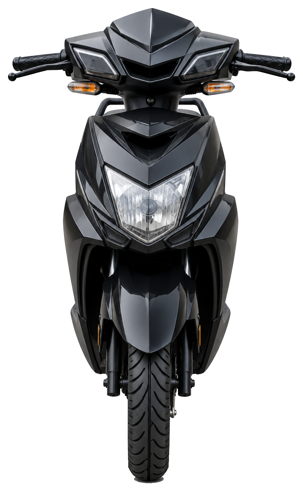

Work with purpose.
“Opus” is commonly used for a significant work or composition. For us, it stands for thoughtful effort: choosing the right vehicle for the need, sharing clear information, and treating the everyday work of mobility with care.
About THE OPUS NETWORK
Every working day is made of thousands of small journeys. THE OPUS NETWORK brings electric vehicle access and battery ecosystem connections together for riders and businesses across Bengaluru.
Explore the fleet
Our story
THE OPUS NETWORK provides electric vehicles on a rental basis for riders and businesses. Our work is rooted in a practical question: how can a vehicle, its battery ecosystem, and the people who depend on it come together in a way that supports a working day?
Today, our network spans Bengaluru, with a branch in HSR and service across Banashankari, Electronic City, Varthur, and more. The fleet includes five models connected to Indofast, Mooving, and Battery Smart ecosystems according to model. We share the vehicle details we have, then invite riders and businesses to enquire about current availability and rental terms.
With a fleet of 600 vehicles and 423 riders across Bengaluru, we are building from the needs of the city we serve. Hyderabad is next, with a launch planned soon.
Electric two-wheelers are one option for the trips that keep a city working. Explore the OPUS models for current details.
Electric two-wheelers offer an alternative to petrol-powered vehicles. Actual running costs depend on the model, route, rental, and battery arrangements.
Battery-electric vehicles have no tailpipe emissions during operation. This describes vehicle use, not the full lifecycle impact of energy and manufacturing.
Battery swapping may be available for a model where the compatible provider service is available. Connections vary by vehicle and location.
Engineered with ergonomic low-step geometry, durable parcel carrier frames, and robust suspensions designed for high daily delivery run times.
Electric drive trains feature significantly fewer moving components than internal combustion engines, minimizing mechanical breakdowns and maximizing route uptime.
Electric vehicles have no tailpipe emissions during operation. Their wider environmental impact depends on how electricity and vehicles are produced and used.
A rider-centred network connecting vehicle access and battery ecosystem options across Bengaluru.
A fleet of 600 vehicles and 423 riders across Bengaluru.
Enquire about individual vehicle needs or larger fleet requirements. Availability and terms are confirmed by the OPUS team.
Vehicle models connect to one or more of Indofast, Mooving and Battery Smart, according to model.
OPUS has a branch in HSR and services Banashankari, Electronic City, Varthur, and other Bengaluru areas.
Model details are presented as supplied by OPUS. Ask the team to confirm availability and terms.
Operating firmly in Bengaluru HSR with upcoming expansion to Hyderabad, establishing a dependable regional electric mobility infrastructure.
The thinking behind our name
Our name is a way of expressing how we want to work: with intention, and with a view of the whole journey.
“Opus” is commonly used for a significant work or composition. For us, it stands for thoughtful effort: choosing the right vehicle for the need, sharing clear information, and treating the everyday work of mobility with care.
“Network” describes the relationships at the heart of our model: riders and businesses, a fleet of electric two-wheelers, service areas across Bengaluru, and battery ecosystem connections that vary by vehicle.
A considered approach to electric mobility—built around real vehicles, real routes, and the people whose work depends on getting around.
What guides us
Share the stated model details, battery connection, and average range up front. Confirm availability and rental terms directly with our team.
Vehicle access matters because of the work and journeys people need to make. We keep riders and business requirements central to the conversation.
Electric mobility involves more than a vehicle. Model, battery ecosystem, operating area, and the rider’s needs all belong in the same discussion.
Where we work
Our branch is in HSR. We service Banashankari, Electronic City, Varthur, and more across Bengaluru. Hyderabad is launching soon.
Talk to our Bengaluru teamOriginal high-resolution vector artwork · coordinate-based neighbourhood markers connect to the OPUS hub; lines show network links, not driving routes.
A simple two-wheeler comparison
Move one slider to see how the selected growth level changes the illustrative charging and swapping comparison.
Both estimates rise with effort. Swapping stays higher, with the gap widening at higher effort.
How the illustration is calculated: with effort scaled from 0 to 1, charging = ₹200 × effort + ₹1,600 × effort². This gives ₹300 at 75% and a maximum of ₹1,800 at 200%. Swapping is 1.10× charging through 75%; above that, its multiplier increases smoothly to 1.53× at 200%, giving ₹330 at 75% and about ₹2,750 at 200%. Both are ₹0 at 0%. These are sample assumptions to show the comparison, not verified OPUS earnings or a guarantee.
The next journey starts with a conversation